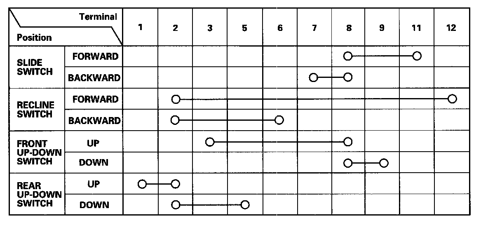

Power Seat Adjustment Switch Test/Replacement
Power Seat Adjustment Switch Test/Replacement
1. Remove the power seat adjustment switch knobs (A) and recline cover from the driver's power seat, then remove the two screws and the power seat adjustment switch.
2. Disconnect the 12P connector from the power seat adjustment switch (B).
3. Reinstall the adjustment switch knobs to the switch.

4. Check for continuity between the terminals in each switch position according to the table.
5. If the continuity is not as specified, replace the switch.